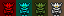
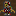
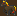
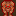
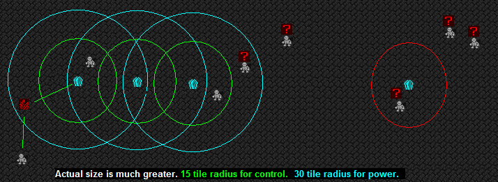
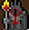
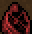
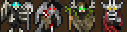

::: Warlocks ::: Skeletons ::: Ghouls ::: Vampires ::: Minions ::: Summoned Creatures ::: Nobles ::: The Overlord :::
WarlocksWitches and Warlocks are the rulers of your dungeon. They need to eat, drink and sleep like any other creature, but they are immortal and don't age. When a warlocks body dies, take good care of the corpse, because it is possible to bring them back from the dead. This power comes at a price. Warlocks can not reproduce in the traditional way, there are no children. Warlocks are natural necromancers and can raise the dead around them, if told to do so. They fight with wraithblades and magestaves, having a natural skill in those weapons. They detest normal weaponry and wont learn these skills. They do shy away from manual labor, and mostly to Research, Writing, Alchemy and Chemistry, Herbalism, Medical Experiments, Working with Gems, Trading and what they might call 'Diplomacy', which consists of luring other races to their dungeons. Warlocks are the only caste that can become a noble, with the exception of the Steward. Their main weapon is magic. In the extensive libraries they can learn up to 100 different spells, from all schools of magic. SkeletonsThe backbone of your fort. Skeletons do most of the menial labors, like woodcutting, mining and crafting. They are unable to learn new skills besides fighting and move rather slowly. They never eat, drink or sleep, making them a cheap workforce. Immune to stun, exertion, fevers, poisons and most other status effects, they are a slow and methodical army. They learn combat skills with a 50% learn-rate, with the exception of whips. You can animate corpses into new skeletons, or build new ones from bones, animating them with a soul. You can add new skills to them at the Inscriptors Workshop. Skeletons come with natural mining and bonecarving skills. Skeletons come in 4 castes: Bone, Ironbone, Bloodsteel and Dreadnought. Each caste gets 2 points in natural skills and 25% higher learn rates than the previous. Their bones are made of the materials, which essentially gives them natural armor. The natural ratio is 1000:100:10:1, but you can manufacture your own upgraded skeletons in the Corrupted Forge. GhoulsGhouls are vicious, corpse-eating creatures. They need to eat meat, drink and sleep. Unlike your skeletal servants, ghouls move very quickly. They have natural butcher skills and make good shock-troopers, having natural skill for whips. Ghoul saliva turns bitten creatures into zombies after a while, so even unarmed they make a good early military. Ghouls might migrate to your fort, or you turn captured invaders into new ghouls in your Torture Chamber. Ghouls can be turned into powerful, but uncontrollable Thralls in the Thrall Chamber. VampiresVampires are more welcome in a warlock dungeon then in other forts. While some might arrive hidden and still follow their own agenda, many vampires openly arrive as migrants and make no secret of their identity. As long as the dungeon produces enough blood or blood wine, they will not quench their on your warlocks or ghouls. Vampires are quick, relentless, don't require food or sleep, can learn both magic and use the magical warlock-weaponry. They may also become nobles, making them a great addition to your dungeon. Vampire Crypts allow the manual conversion of civ-members into vampires, as well as manual feeding. MinionsEach Warlock summons 4 elemental minions when he enters the map. Keep them around as pets, or butcher them early for souls and bones. They can not be recreated, so once they are gone, they are gone. Its either a fast start, or many minions later in the game.  Air Mephits can paraylise enemies shortly. Fire Mephits can breathe flames. Take care. Acid Mephits cause pain, blisters and swelling with their attacks. Ice Mephits can throw icicles and freeze water underground. Summoned CreaturesSince Warlocks dont trade much and the embark selection for pets is usually empty and only occasionally filled with a few, evil animals. Because of this, Warlocks can create their own pets easily.  Zombie: Can be attracted at the graveyard, using a stack of meat. This has a 25% success chance. Zombies are opposed to life and roam the map randomly.
 Nightmare: A firebreathing horse. Bought from the demonic attorney.  Bloodbeast: A supreme warrior made of blood. Made in the southern library section, which specialises in blood magic.
Animated Armor: A truly tough bastard. Made from a full set of armor, a shield and either a sword or a mace at the Enchanter.
Pylons keep Skeletons under your control. If a Skeleton leaves the area around a Warlock or Pylon, it will revert to an uncontrollable state after a few weeks. If a Pylon is within 15 tiles, it will stay under your control. Pylons need access to a Warlock to be powered, and can power any other Pylon within 30 tiles. Since all this is difficult to explain with text alone, here a picture (not to scale) :  The Warlock on the left has line-of-sight to a pylon and a skeleton. He controls them. The Pylon then powers and controls nearby skeletons and pylons. All skeletons in the green area are controled, all pylons in the blue area would have power. The Pylon to the right is useless, since it has no power. You can identify a powered pylon ingame by its blinking cyan 'P'. If all Warlocks die, all pylons will power down after a few weeks. If you lose control over a Skeleton, simply bringing a powered Pylon or a Warlock near it will bring it back under your control. You can also leave it walking around the map, it might come back on its own, or attack wildlife and invaders. Note that it takes several ingame weeks before you lose control over a Skeleton, or to power or unpower a Pylon. While Warlocks can only control servants that they have line-of-sight to, Pylons can control across z-levels and through solid rock. If you move out to prolonged battles using Skeletons, better take a Warlock with you. NoblesWarlock nobles are way different from what you are used to. Only Warlocks and vampiric Warlocks can become nobles, with the exception of the lowly Steward and the militia captians. You can appoint all nobles from the very beginning, but they require rooms and furniture, most of them wont to labors, and they have mandates and demands. Take care not to anger them. Steward: You start the dungeon with this noble. He or she can be of any race, even a Skeleton or Ghoul, and requires nothing but a meager office. He will talk to foreign diplomats and run the mundane parts of the dungeon. // I would have liked to get rid of this, but one elected noble is necessary in the game, no way around it, to appoint all following nobles. He has no special graphics.  Overlord: The leader of your dungeon. He will lead a squad of up to 100 soldiers. He has 3 demands and 3 mandates and requires full suits of rooms, offices, dining room and tombs, cant be punished. He runs the minion raids in the Throne Room. This is your best source of prisoners. //due to DF being very stubborn, any Warlock can be the Overlord noble, but I recommend to use the Overlord caste you make in the Throne Room for this position.  Fleshmonger: Your doctor. He runs your hospital. He needs an office, dining room, bedroom and tomb; he has 1 demand and 1 mandate.
 Death, Hunger, Pestilence and War: Four militia captians, which can lead a squad of 1 unit. Themselves. These positions should be filled with powerful mages or individual highly trained and equipped ghouls or skeletons. It is more of an atmospheric point, when you say: I had it was this FB in my caverns, I am sending Death to take it down. The Riders of the Apocalypse do not do menial labor and require a tomb.
Non-Appointable: Monarch, Diplomat and Merchants. The monarch will lead your home-civ and might even show up in your fort. He is literally the same as a dwarven monarch, just renamed to 'Master Sorcerer'. Mostly just used for world-gen. Diplomats might show up once a year and act like any other diplomat of any other civ. No changes here. They are called 'Emissary'. Merchants would usually show up with caravans to trade, but warlock civs do not have access to pull animals for wagons, or pack animals to carry tradegoods, therefore your civ is always 'no-trade'. Merchants shouldnt be possible. If you do happen to see one, he will be called 'Shady Merchant'. The OverlordYou can appoint one Warlock to be the boss. He gets 250% strength, toughness and endurance, and gets unique abilities. You can send a Warlock to the Throne Room to do this. The Overlord casually slaps passing Warlocks to let them know whos boss. They will feel pain (and shame), but move faster for a while. Once a year, 4 new minions are summoned by the Overlord automatically. You will see him running the reactions in the Throne Room. He can send minions to raiding missions and win prisoners, scalps or materials. Which may cause retaliations by the other races. If your Overlord dies, you will not be able to appoint a new one for 1 month. After that you may try to appoint another Warlock. |